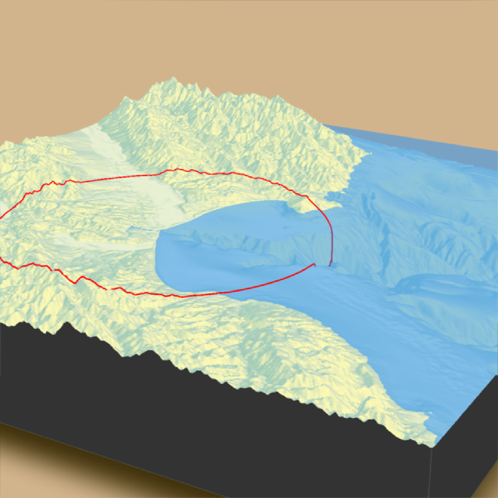
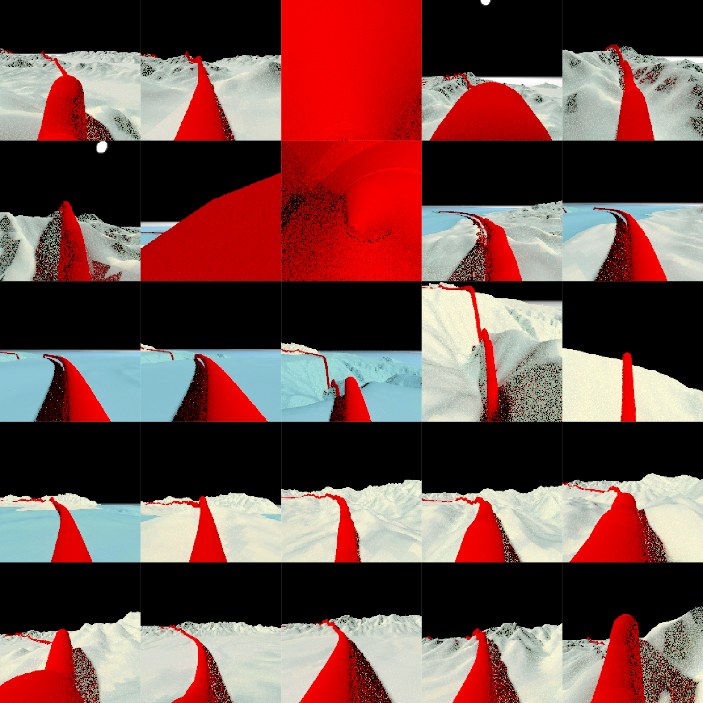
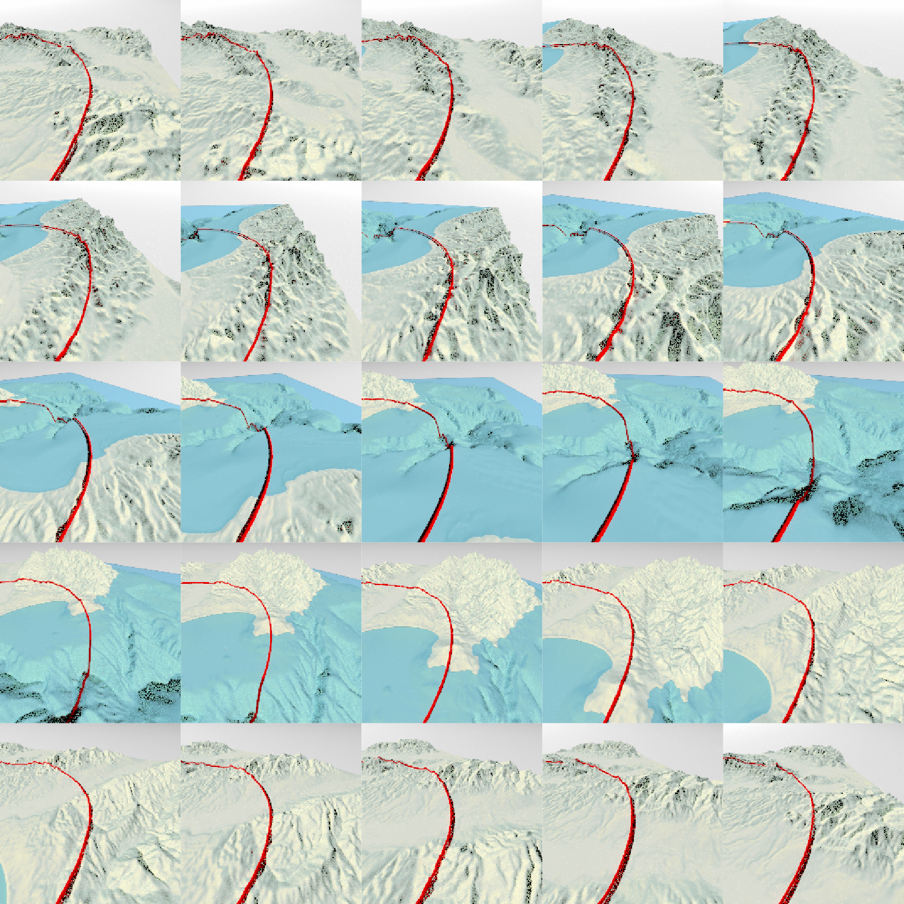

R/convert_path_to_animation_coords.R
convert_path_to_animation_coords.RdTransforms latitude/longitude/altitude coordinates to the reference system used in `render_highquality()`, so they can be used to create high quality pathtraced animations by passing the output to the `animation_camera_coords` argument in `render_highquality()`.
This function converts the path values to rayshader coordinates (by setting `return_coords = TRUE` in `render_path()`) and then subtracts out the rgl y-offset, which can be obtained by calling the internal function `rayshader:::get_scene_depth()`.
convert_path_to_animation_coords(
lat,
long = NULL,
altitude = NULL,
extent = NULL,
frames = 360,
reorder = FALSE,
reorder_first_index = 1,
reorder_duplicate_tolerance = 0.1,
reorder_merge_tolerance = 1,
simplify_tolerance = 0,
zscale = 1,
heightmap = NULL,
offset = 5,
type = "bezier",
offset_lookat = 1,
constant_step = TRUE,
curvature_adjust = "none",
curvature_scale = 30,
follow_camera = FALSE,
follow_distance = 100,
follow_angle = 45,
follow_rotations = 0,
follow_fixed = FALSE,
follow_fixed_offset = c(10, 10, 10),
damp_motion = FALSE,
damp_magnitude = 0.1,
resample_path_evenly = TRUE,
...
)Vector of latitudes (or other coordinate in the same coordinate reference system as extent).
Vector of longitudes (or other coordinate in the same coordinate reference system as extent).
Elevation of each point, in units of the elevation matrix (scaled by zscale). If left `NULL`, this will be just the elevation value at ths surface, offset by `offset`. If a single value, all data will be rendered at that altitude.
Either an object representing the spatial extent of the scene (either from the `raster`, `terra`, `sf`, or `sp` packages), a length-4 numeric vector specifying `c("xmin", "xmax","ymin","ymax")`, or the spatial object (from the previously aforementioned packages) which will be automatically converted to an extent object.
Default `360`. Total number of animation frames.
Default `TRUE`. If `TRUE`, this will attempt to re-order the rows within an `sf` object with multiple paths to be one continuous, end-to-end path. This happens in two steps: merging duplicate paths that have end points that match with another object (within `reorder_duplicate_tolerance` distance), and then merges them (within `reorder_merge_tolerance` distance) to form a continuous path.
Default `1`. The index (row) of the `sf` object in which to begin the reordering process. This merges and reorders paths within `reorder_merge_tolerance` distance until it cannot merge any more, and then repeats the process in the opposite direction.
Default `0.1`. Lines that have start and end points (does not matter which) within this tolerance that match a line already processed (order determined by `reorder_first_index`) will be discarded.
Default `1`. Lines that have start points that are within this distance to a previously processed line's end point (order determined by `reorder_first_index`) will be reordered within the `sf` object to form a continuous, end-to-end path.
Default `0` (no simplification). If greater than zero, simplifies the path to the tolerance specified. This happens after the data has been merged if `reorder = TRUE`. If the input data is specified with long-lat coordinates and `sf_use_s2()` returns `TRUE`, then the value of simplify_tolerance must be specified in meters.
Default `1`. The ratio between the x and y spacing (which are assumed to be equal) and the z axis in the original heightmap.
Default `NULL`. Automatically extracted from the rgl window--only use if auto-extraction of matrix extent isn't working. A two-dimensional matrix, where each entry in the matrix is the elevation at that point. All points are assumed to be evenly spaced.
Default `5`. Offset of the track from the surface, if `altitude = NULL`.
Default `cubic`. Type of transition between keyframes. Other options are `linear`, `quad`, `bezier`, `exp`, and `manual`. `manual` just returns the values passed in, properly formatted to be passed to `render_animation()`.
Default `0`. Amount to offset the lookat position, either along the path (if `constant_step = TRUE`) or towards the derivative of the Bezier curve.
Default `TRUE`. This will make the camera travel at a constant speed.
Default `none`. Other options are `position`, `lookat`, and `both`. Whether to slow down the camera at areas of high curvature to prevent fast swings. Only used for curve `type = bezier`. This does not preserve key frame positions. Note: This feature will likely result in the `lookat` and `position` diverging if they do not have similar curvatures at each point. This feature is best used when passing the same set of points to `positions` and `lookats` and providing an `offset_lookat` value, which ensures the curvature will be the same.
Default `30`. Constant dividing factor for curvature. Higher values will subdivide the path more, potentially finding a smoother path, but increasing the calculation time. Only used for curve `type = bezier`. Increasing this value after a certain point will not increase the quality of the path, but it is scene-dependent.
Default `FALSE`. If `TRUE`, this generates a 3rd person view that follows the path specified in `lat`, `long`, and `altitude`. The distance to the camera is specified by `follow_distance`, and the angle (off the ground) is specified by `follow_angle`. Make the camera rotate around the point as it moves by setting `follow_rotations` to a non-zero number. The camera points in the direction of the You can also set the camera to be a fixed distance and angle above the by settings `follow_fixed = TRUE` and specifying the distance in `follow_fixed_offset`.
Default `100`. Distance for the camera to follow the point when `follow_camera = TRUE`.
Default `45`. Angle (off the ground) of the camera when `follow_camera = TRUE`.
Default `0`. Number of rotations around the point when `follow_camera = TRUE`.
Default `FALSE`. If `TRUE`, the camera doesn't look in the direction of the path, but rather sits at a fixed relative location to the path.
Default `c(10,10,10)`. If `follow_fixed = TRUE`, the offset from the path to place the camera.
Default `FALSE`. Whether the suppress quick, jerky movements of the camera by linearly interpolating between the current camera position and the goal position. Amount of linear interpolation set in `damp_magnitude`.
Default `0.1`. Amount of linear interpolation if `damp_motion = TRUE`.
Default `TRUE`. This re-samples points along the path so that the camera moves at a constant speed along the path. This also allows paths with large numbers of points to be used with a smaller number of frames, and improves computation time of the animation path in those instances.
Other arguments to pass to `rayrender::generate_camera_motion()`
#Generate a circle in Monterey Bay and fly around on top of it
if(rayshader:::run_documentation()) {
montereybay %>%
sphere_shade() %>%
plot_3d(montereybay,zscale=50,water=TRUE,
shadowcolor="#40310a", background = "tan",
theta=210, phi=22, zoom=0.40, fov=55)
moss_landing_coord = c(36.806807, -121.793332)
t = seq(0,2*pi,length.out=1000)
circle_coords_lat = moss_landing_coord[1] + 0.25 * sin(t)
circle_coords_long = moss_landing_coord[2] + 0.25 * cos(t)
render_path(extent = attr(montereybay,"extent"), heightmap = montereybay,
lat = unlist(circle_coords_lat), long = unlist(circle_coords_long),
zscale=50, color="red", antialias=TRUE,
offset=100, linewidth=2)
render_snapshot()
camera_path = convert_path_to_animation_coords(extent = attr(montereybay,"extent"),
heightmap = montereybay,
lat = unlist(circle_coords_lat),
long = unlist(circle_coords_long),
fovs = 80,
zscale=50, offset=250, frames = 25)
#Render a series of frames, following the path specified above
temp_dir = tempdir()
render_highquality(samples=16, animation_camera_coords = camera_path,
width=200,height=200, filename = sprintf("%s/frame",temp_dir),
use_extruded_paths = TRUE,
sample_method="sobol_blue")
#Plot all these frames
image_list = list()
for(i in 1:25) {
image_list[[i]] = png::readPNG(sprintf("%s/frame%d.png",temp_dir,i))
}
rayimage::plot_image_grid(image_list, dim = c(5,5))
}


if(rayshader:::run_documentation()) {
#Now render a third-person view by setting `follow_camera = TRUE`
camera_path = convert_path_to_animation_coords(extent = attr(montereybay,"extent"),
heightmap = montereybay,
lat = unlist(circle_coords_lat),
long = unlist(circle_coords_long),
fovs = 80,
follow_camera = TRUE,
zscale=50, offset=250, frames = 25)
#Render a series of frames, following the path specified above
temp_dir = tempdir()
render_highquality(samples=16, animation_camera_coords = camera_path,
width=200,height=200, filename = sprintf("%s/frame",temp_dir),
use_extruded_paths = TRUE,
sample_method="sobol_blue")
#Plot all these frames
image_list = list()
for(i in 1:25) {
image_list[[i]] = png::readPNG(sprintf("%s/frame%d.png",temp_dir,i))
}
rayimage::plot_image_grid(image_list, dim = c(5,5))
}
